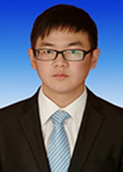

仰望星空盼楚天、脚踏实地励栋才
四年来，母校的培养、恩师的教诲、父母的关爱、同学的支持，让我一点点获得了今天的成绩。可以说，在大学这条路上我自信走得激情澎湃，走得沉着稳重。今天，借此机会，请允许我向一路帮助我、教导我的各位领导、老师，向一直陪伴我、鼓励我的各位同学、伙伴表示衷心的感谢。在这短暂的四年时光中，有人夸赞我的学习成绩，有人认同我的工作表现，有人羡慕我获得的奖项，有人感叹我丰富多彩的大学生活。但是最让我感到由衷高兴的，当数我有幸接触的一位位敬业严谨的师长和博文强识的知己，是他们在背后指引着我不断超越自我，追求卓越。一个圆圈的半径越大，圆圈外部接触的面积也越大，对于求知的道路来说也是这样，接触的人多了，自然感觉不会的东西也越多，这样就会主动去尝试一些新鲜事物，弥补自身的不足。正因如此，通过不断的学习、充电，才有了今天的我。记得曾经跟一位我十分敬重的老师交谈，我对他说：这四年，师大给了我太多东西。当时，他的回答是：师大给每一位学生的东西都很多，只是你把握住了，所以你收获的比别人更多。老师的回答让我重新思考自己走过的这不平凡的四年，说实话，学习科研很枯燥，学生工作也不像大家想得那样简单，要想真为同学们做点什么非常不容易。那到底是什么东西在支撑、激励我克服种种困难，力求全面发展的呢？是一种力量，亦是一种信念。这个信念也应该是每一个东师学子需要坚守的奋斗目标：学为人师，为人师表。发扬自己人格的魅力，努力成为学习的楷模、工作的典范。下面我想跟大家分享我大学四年的学习、科研和工作经历，希望与大家共勉。
刚进大学，我也曾迷茫过，颓废过，找不到目标，定不了方向。大一时，我的人生中第一次出现了两位数成绩排名，当时对我来说是一次警钟般的教训，但我没有放弃，在日记本上写下了八字奋斗誓言——锐意进取，永不言弃。从那天开始，我励志从点滴做起，从各个方面锻炼自身的素质与能力，既夯实专业理论基础，又注重提升学术科研能力。经过四年的努力，如今的我四年综合成绩在年级172人中排名第2，曾多次获得国家奖学金、宝钢优秀学生奖、校长奖学金；只有学习上的成绩对于大学生而言还远远不够，我还坚信科研与学习是一对互补品，而不应该互相替代，只有将科研融入学习中，才能提升对知识掌握的深度和广度。所以我积极参与各级科研项目申报，主持参与的国家级大学生创新创业训练计划、中央高校专项科研业务资金、教育部人文社科规划基金、吉林省青少年发展计划等4项科研项目都顺利结项，并都取得了不错的研究成果。这些科研项目中涉及的领域包括经济学、政治学、教育学、管理学等学科，对我来说，是一次次难得的学习机会。同时，我还发表第一作者学术论文3篇，其中包括CSSCI 期刊1篇，核心期刊1篇，国家级期刊1篇，连续2次获得吉林省“五•四”经济论文一等奖。正是这日复一日的积累，奠定了我扎实的专业学科基础和交叉性学术研究能力，所以我也凭借自己的科研经历和科研作品，获得浙江大学、上海交通大学、上海财经大学、中山大学等15所高校的暑期保研夏令营参营资格。但最终由于时间原因，我只参加了浙江大学、武汉大学、山东大学、中国科学院大学4所学校的夏令营并全部获得免试硕、博士研究生录取资格，综合自身情况和个人偏好，我觉得浙江大学是一所人文底蕴特别深厚的综合性重点大学，更有利于我的未来发展，所以最终选择在浙江大学经济学院直接攻读博士学位。
从学习这点来说，我认为“学习的楷模”应该要做到“夯实基础，学以致用；慎思明辨，求是创新；只问是非，不计利弊；厚积薄发，追求卓越。”这八个短语既有基础方法，又有理想追求；既有学习态度，也有科学精神。能做到这几点，我想最起码在科学这条道路上，能成为学习的楷模。
同学们，现代社会的竞争是综合实力的较量，日益残酷的社会现实对我们提出了新的发展要求。在这个复杂多变的社会背景下，我们如何才能被社会认可？我们大学所学如何才能应用到实际工作中？我觉得在学好、学深、学广专业知识的同时，加强实践是一种有效办法。所以，如果说学习、科研是促使我走向成功的主力，那么加强实践是提升我核心竞争力的助力。大一我参加了7个学生组织，大二我在4个组织任副部长，大三我仍在4个组织任部长。当选第四十届校学生会主席团成员兼学研部部长；参加吉林省学生联合会第九次代表大会、青年马克思主义培训班、学生骨干培训班、学生社团骨干培训营、香港——内地大学生冬季文化交流营；组织开展“中国梦•教育梦”大学生教师技能大赛、“教育梦•青春梦”学风建设系列活动；组织申报“东芝杯”全国高等师范院校教学技能创新大赛；为加强师范生师能、师德、师技、师艺培养，创新实践教学，创办“师道大讲堂”大型系列讲座。五四优秀团员、五四红旗团干部、优秀学生干部、吉林省优秀学生骨干、长春市“十佳大学生”正是对我一路实践经历最好的总结。从院会到校会、从社团到社联，从企事业单位到政府机关，从基层实践到中央锻炼，我写过项目方案、办过大型活动、做过基层调研、拟过政府规划，可以说各类学生组织、各级行政机关都有我的足迹。
有人或许会问，平时做一份学生工作就很累，基本没有时间学习，你怎么做了那么多，还没落下学习？确实，很多时候我也在问自己究竟是怎么做到的，我没有时间吃饭，很多同学都说我在他们脑子里的印象就是每天背着个书包在路上跑来跑去，也不知道在忙些什么。回想起来确实是这样，那些年，我白天除了上课，就是来回穿梭在钟楼、学生活动中心之间，但四年来，我没有翘过一堂课，因为听课时是我感觉最轻松的时刻。每天早上七点出门，晚上九点才回到寝室吃点东西，接着完成白天没有完成的工作，直到十一点后才去自习室开始学习，因为寝室熄灯后再也没有人找我。
为什么我要让自己那么忙，我也曾想过放弃，但最终没有，因为我选择了，我就要坚持下去，这才是我。我心目中“工作的典范”，应该“讲政治、顾大局、有作为、敢担当、重服务”。所以，每当我看见少数学生干部不重服务重利益，不搞建设搞圈子，感到十分痛心。我们不要求人人居高，但求心心为校；我们不要求每个人都能干出一番大事业，但求每一位学生干部都心想着为广大同学做点实事。正所谓“一年学生骨干，一生精神楷模”。
同学们，在汇报的最后，我想跟大家分享我个人特别喜欢的四句话。一是我们要发挥非对称优势，特别是非对称文化优势。不同的人会扮演不同的角色，也许是一位普普通通的学生，也许是一位学术潜力股，也许是一位才艺达人，也许是一位杰出的学生领袖，无论身处何事，身居何位，都要明确自己的定位，保持自己独特的优越性和专业性，自然会散发出人格的魅力。所以，我心目中“人格的魅力”可以概括为“转变观念，适应环境；内敛气质，外塑形象；找准定位，扬长避短；开放心态，与时俱进。”魅力的产生源自于心灵的净化和思想的蜕变，将依附于外在条件的支配能力内化为人格的号召，这就是魅力。二是做事情不要总以利益为导向，没有利益要经历，没有经历长阅历。如果过分看重利益，这样的人是脆弱的，因为一旦没有利益获得，那么他的思想会消极懈怠；反之，不看重利益看重经历，那么你在经历中获得的会是你一辈子宝贵的财富，这不是一点点物质就能衡量的。再不幸，长长阅历、见识也会让你更加坚强，是为了下一次赶超积蓄能量。三是要做一位现实的理想主义者。既要仰望星空、又要脚踏实地。只有理想不贴近现实，那是空想，也是妄想；没有理想太现实，这样的人生没有趣味。四是注重生活管理，有计划不会忙，有原则不会乱，有预算不会穷。这是一种生活方式，也是一种生活哲学。
同学们，今天我的汇报就这些，希望你们这四年把握机遇、勇挑重担，有个圆满、无悔的大学生活。
从学习这点来说，我认为“学习的楷模”应该要做到“夯实基础，学以致用；慎思明辨，求是创新；只问是非，不计利弊；厚积薄发，追求卓越。”这八个短语既有基础方法，又有理想追求；既有学习态度，也有科学精神。能做到这几点，我想最起码在科学这条道路上，能成为学习的楷模。
同学们，现代社会的竞争是综合实力的较量，日益残酷的社会现实对我们提出了新的发展要求。在这个复杂多变的社会背景下，我们如何才能被社会认可？我们大学所学如何才能应用到实际工作中？我觉得在学好、学深、学广专业知识的同时，加强实践是一种有效办法。所以，如果说学习、科研是促使我走向成功的主力，那么加强实践是提升我核心竞争力的助力。大一我参加了7个学生组织，大二我在4个组织任副部长，大三我仍在4个组织任部长。当选第四十届校学生会主席团成员兼学研部部长；参加吉林省学生联合会第九次代表大会、青年马克思主义培训班、学生骨干培训班、学生社团骨干培训营、香港——内地大学生冬季文化交流营；组织开展“中国梦•教育梦”大学生教师技能大赛、“教育梦•青春梦”学风建设系列活动；组织申报“东芝杯”全国高等师范院校教学技能创新大赛；为加强师范生师能、师德、师技、师艺培养，创新实践教学，创办“师道大讲堂”大型系列讲座。五四优秀团员、五四红旗团干部、优秀学生干部、吉林省优秀学生骨干、长春市“十佳大学生”正是对我一路实践经历最好的总结。从院会到校会、从社团到社联，从企事业单位到政府机关，从基层实践到中央锻炼，我写过项目方案、办过大型活动、做过基层调研、拟过政府规划，可以说各类学生组织、各级行政机关都有我的足迹。
有人或许会问，平时做一份学生工作就很累，基本没有时间学习，你怎么做了那么多，还没落下学习？确实，很多时候我也在问自己究竟是怎么做到的，我没有时间吃饭，很多同学都说我在他们脑子里的印象就是每天背着个书包在路上跑来跑去，也不知道在忙些什么。回想起来确实是这样，那些年，我白天除了上课，就是来回穿梭在钟楼、学生活动中心之间，但四年来，我没有翘过一堂课，因为听课时是我感觉最轻松的时刻。每天早上七点出门，晚上九点才回到寝室吃点东西，接着完成白天没有完成的工作，直到十一点后才去自习室开始学习，因为寝室熄灯后再也没有人找我。
为什么我要让自己那么忙，我也曾想过放弃，但最终没有，因为我选择了，我就要坚持下去，这才是我。我心目中“工作的典范”，应该“讲政治、顾大局、有作为、敢担当、重服务”。所以，每当我看见少数学生干部不重服务重利益，不搞建设搞圈子，感到十分痛心。我们不要求人人居高，但求心心为校；我们不要求每个人都能干出一番大事业，但求每一位学生干部都心想着为广大同学做点实事。正所谓“一年学生骨干，一生精神楷模”。
同学们，在汇报的最后，我想跟大家分享我个人特别喜欢的四句话。一是我们要发挥非对称优势，特别是非对称文化优势。不同的人会扮演不同的角色，也许是一位普普通通的学生，也许是一位学术潜力股，也许是一位才艺达人，也许是一位杰出的学生领袖，无论身处何事，身居何位，都要明确自己的定位，保持自己独特的优越性和专业性，自然会散发出人格的魅力。所以，我心目中“人格的魅力”可以概括为“转变观念，适应环境；内敛气质，外塑形象；找准定位，扬长避短；开放心态，与时俱进。”魅力的产生源自于心灵的净化和思想的蜕变，将依附于外在条件的支配能力内化为人格的号召，这就是魅力。二是做事情不要总以利益为导向，没有利益要经历，没有经历长阅历。如果过分看重利益，这样的人是脆弱的，因为一旦没有利益获得，那么他的思想会消极懈怠；反之，不看重利益看重经历，那么你在经历中获得的会是你一辈子宝贵的财富，这不是一点点物质就能衡量的。再不幸，长长阅历、见识也会让你更加坚强，是为了下一次赶超积蓄能量。三是要做一位现实的理想主义者。既要仰望星空、又要脚踏实地。只有理想不贴近现实，那是空想，也是妄想；没有理想太现实，这样的人生没有趣味。四是注重生活管理，有计划不会忙，有原则不会乱，有预算不会穷。这是一种生活方式，也是一种生活哲学。
同学们，今天我的汇报就这些，希望你们这四年把握机遇、勇挑重担，有个圆满、无悔的大学生活。